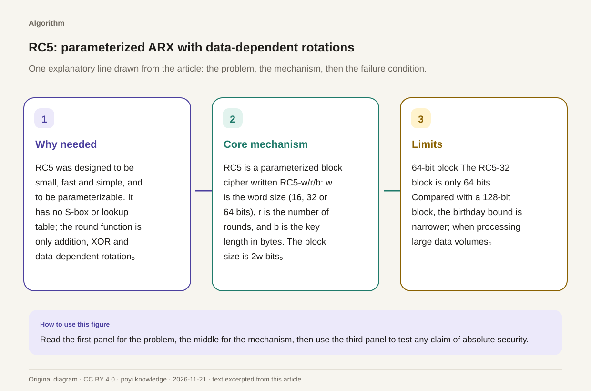
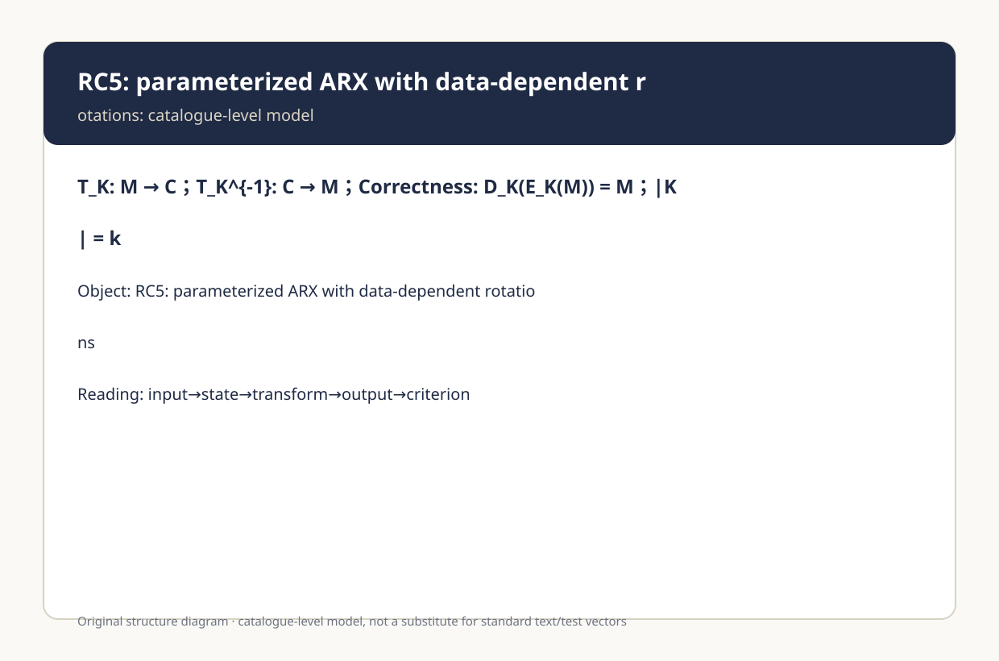

Principles
Algorithm: RC5 (RC5 分组密码). RC5 is a parameterized block cipher written RC5-w/r/b: w is the word size (16, 32 or 64 bits), r is the number of rounds, and b is the key length in bytes. The block size is 2w bits; the common RC5-32 uses two 32-bit words A and B, for a 64-bit block. Rivest treats RC5-32/12/16 (32-bit words, 12 rounds, 16-byte key) as the nominal parameter set. RC5 key expansion converts the b-byte key into c words L and produces T = 2(r+1) round-key words S. S is initialized with two constants:
P = 0xb7e15163
Q = 0x9e3779b9
S[0] = P
S[i] = S[i-1] + Q (mod 2^w)
L is then mixed into S: repeat 3 * max(c, T) times, rotating and adding A and B, and write the results back to S and L. RC5 round keys have no S-box, only addition, XOR and cyclic rotation. Encryption first adds S[0] and S[1] to A and B, then runs r rounds:
A = ((A xor B) <<< B) + S[2i]
B = ((B xor A) <<< A) + S[2i+1]
Here <<< is a W-bit cyclic left rotation, and the rotation amount depends only on the low log2(W) bits of B or A. Decryption runs backward: subtract the round keys, undo the rotation and XOR, then subtract S[0] and S[1]. This data-dependent rotation-amount design is a distinguishing feature of RC5.

Why it matters
RC5 was designed to be small, fast and simple, and to be parameterizable. It has no S-box or lookup table; the round function is only addition, XOR and data-dependent rotation, suitable for hardware and software. The parameters w, r and b let users trade block size, rounds, key length and performance.
Data-dependent rotations give the round function nonlinearity: the rotation amount is not a fixed constant but comes from the other half of the data. This makes RC5's diffusion and differential behaviour different from ARX ciphers with fixed rotations, and it makes timing and power analysis an important implementation concern.
RC5 is also historically important as RC6's predecessor. RC6 reached the final round of the 1998 AES competition, where AES selected Rijndael; RC5 itself was not standardized as a modern general-purpose block cipher, but it is an important sample for understanding ARX parameterization and data-dependent rotations.
Applications
RC5 appears mainly in software implementations, teaching and early cryptographic libraries. Its parameterization makes it suitable for demonstrating how one algorithm behaves under different w/r/b choices, rather than providing one fixed standard parameter set. RFC 2040 also defines RC5-CBC, RC5-CBC-Pad and RC5-CTS, showing that RC5 was considered for complete message encryption.
This article uses the RC5-32/20/16 reference vector: 32-bit words, 20 rounds and a 16-byte key. It is not Rivest's nominal 12-round parameter set but a reproducible parameter set from the test-vector document. The nominal RC5-32/12/16 remains the main example for understanding parameter choice.
RC5 defines only a block cipher (and the RFC 2040 modes), not authentication. When authentication is needed, use AEAD or encrypt-then-MAC; RC5's data-dependent rotations are not integrity protection.

Limits & attacks
The RC5-32 block is only 64 bits. Compared with a 128-bit block, the birthday bound is narrower; when processing large data volumes, a 64-bit block limits the number of blocks that can be encrypted safely. RC5-64 has a larger block but also higher round and implementation costs.
RC5's rotation amounts come from the data. Software implementations can show timing differences for different rotation amounts, and hardware implementations can leak the rotation amounts through power or electromagnetic emissions. Constant-time implementation, masking and fault protection are implementation concerns, not part of the algorithm definition.
RC5's security depends on w, r and b. Rivest explicitly warns that too few rounds or unsuitable parameters provide very weak security; the nominal RC5-32/12/16 is only a suggested starting point, not sufficient for every threat model. Parameters must be fixed at design time and must not be chosen arbitrarily by the receiver at run time.
RC5 provides only a block-cipher pseudorandom permutation, not integrity. Flipping ciphertext changes the corresponding plaintext, but RC5 itself cannot detect it; when authentication is needed, use AEAD or encrypt-then-MAC.
This article's teaching implementation handles only RC5-32 with fixed rounds and fixed keys/data. It does not generate keys, run in constant time, implement CBC/CTS modes, protocols, key management or side-channel defenses, and must not be used in production.
History
RC5 was proposed by Ronald Rivest at the 1994 Fast Software Encryption workshop. The paper emphasizes speed, suitability for software and hardware, data-dependent rotations, and variable word size, rounds and key length; it treats RC5-32/12/16 as the nominal parameter set.
In 1996, Baldwin and Rivest described RC5 key expansion, block encryption and the CBC, CBC-Pad and CTS modes in RFC 2040. RC6 is RC5's successor design and a separate entity; it is outside this article's scope.
RC5's historical value is that it brought "parameterization" and "data-dependent rotations" into block-cipher design. It did not become a modern general-purpose standard, but its ARX structure, parameter trade-offs and side-channel issues remain important background for later lightweight ciphers.
Worked example & verification
Worked example
Take one published or standard test vector, record the input, the ordered steps and the byte-exact output, then compare with an independent implementation. Where no citable numeric vector is available, the entry records only structural steps and does not invent an output.
References
- Wikipedia search entry for RC5 分组密码. https://zh.wikipedia.org/w/index.php?search=RC5%20%E5%88%86%E7%BB%84%E5%AF%86%E7%A0%81
- Handbook of Applied Cryptography (Menezes, van Oorschot, Vanstone). https://www.cacr.math.uwaterloo.ca/hac/